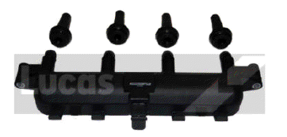
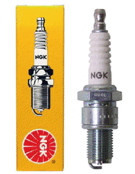
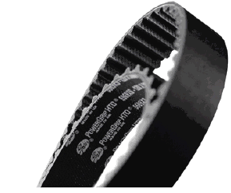
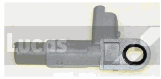
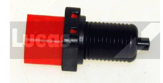

Ignition Coil:
An ignition coil (also called a spark coil) is an induction coil in an automobile's ignition
system which transforms the battery's low voltage to the thousands of volts needed to create an electric
spark in the spark plugs to ignite the fuel. Some coils have an internal resistor while others rely on a
resistor wire or an external resistor to limit the current flowing into the coil from the car's 12 volt supply.
The wire that goes from the ignition coil to the distributor and the high voltage wires that go from the
distributor to each of the spark plugs are called spark plug wires or high tension leads.
Price: £ 46
Part Number: DMB812.LUC
Manufacturer: Lucas

Spark Plugs:
A spark plug is a device for delivering electric current from an ignition system to the combustion
chamber of a spark-ignition engine to ignite the compressed fuel/air mixture by an electric spark, while
containing combustion pressure within the engine. A spark plug has a metal threaded shell, electrically
isolated from a central electrode by a porcelain insulator. The central electrode, which may contain
a resistor, is connected by a heavily insulated wire to the output terminal of an ignition coil or magneto.
The spark plug's metal shell is screwed into the engine's cylinder head and thus electrically grounded.
The central electrode protrudes through the porcelain insulator into the combustion chamber,
forming one or more spark gaps between the inner end of the central electrode and usually one or
more protuberances or structures attached to the inner end of the threaded shell and designated
the "side", "earth", or "ground" electrode(s)
Price: £ 19
Part Number: BKR6EZ
Manufacturer: NGK

Fan Belts:
A fan belt, often called a drive belt, is an essential engine component in most vehicles. Fan belt failure
can lead to decreased performance or complete stalling. It connects the engine cooling fan to the
alternator and crankshaft pulley. Belts are also used to power components such as the air conditioner
compressor,
Price: £ 8.86
Part Number: 6PK730
Manufacturer: Gates

Engine Speed Sensor:
An engine speed sensor, not to be confused with the vehicle speed sensor, is a sensor that is attached to
the crankshaft of your car's engine.
Being attached to the crankshaft of the vehicle's engine, the engine speed sensor is meant to assess the
speed at which the crankshaft spins. The device is basically a metal disk that has a serrated (toothed)
circumference. In addition, there's a stationary device containing a magnetic coil, which acts as a
standard for the measurement. When the crankshaft spins, induction current is set up around the
magnetic coil. The serrated edge of the crankshaft obstructs the produced magnetic field and this is
recorded. This is what gives a measurement of the amount of current produced, which is outputted as
the speed of the vehicle's engine.
Price: £ 20.
Part Number: ELABS090.LUC
Manufacturer: Lucas

Brake Light Switch:
A brake light switch is an electrically powered switch that triggers the brake lights to activate when
brakes are applied. It operates via two wires, called a power-in wire and power-out wire. When a driver
depresses the brake pedal, a plunger device contacts a metal plate, which completes an electric circuit
in the switch via the two wires. The switch
then activates the brake lights.
Price: £ 8
Part Number: SMB619.LUC
Manufacturer: Lucas

|